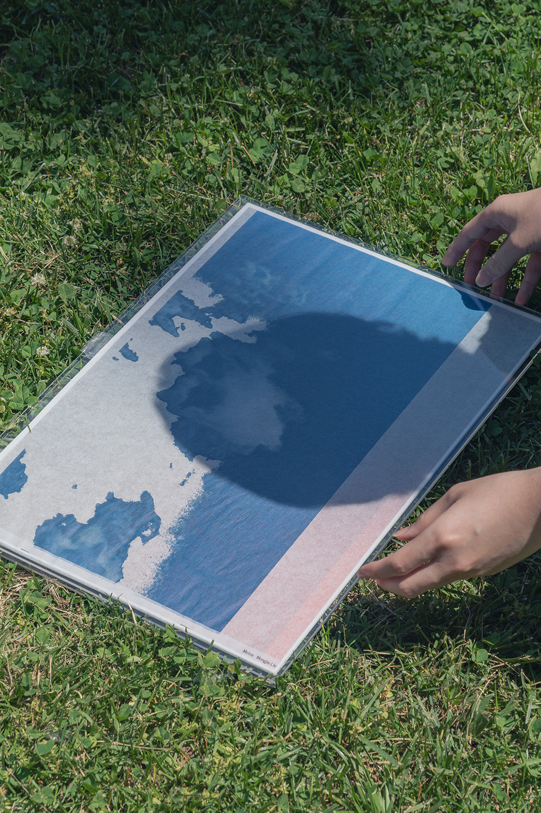
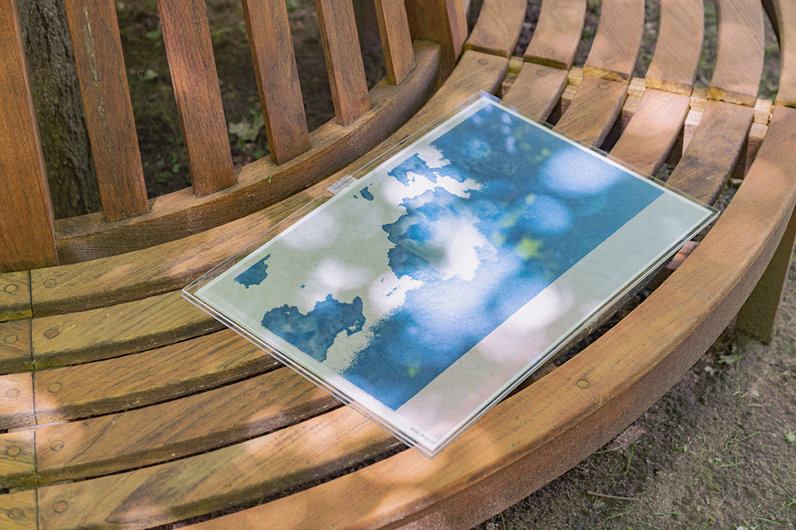
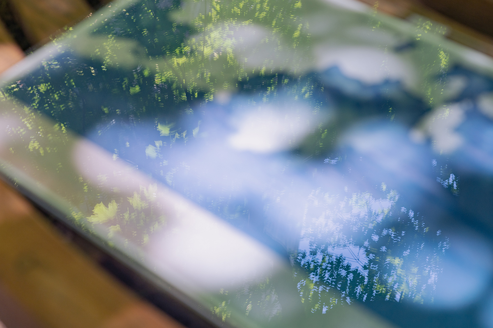
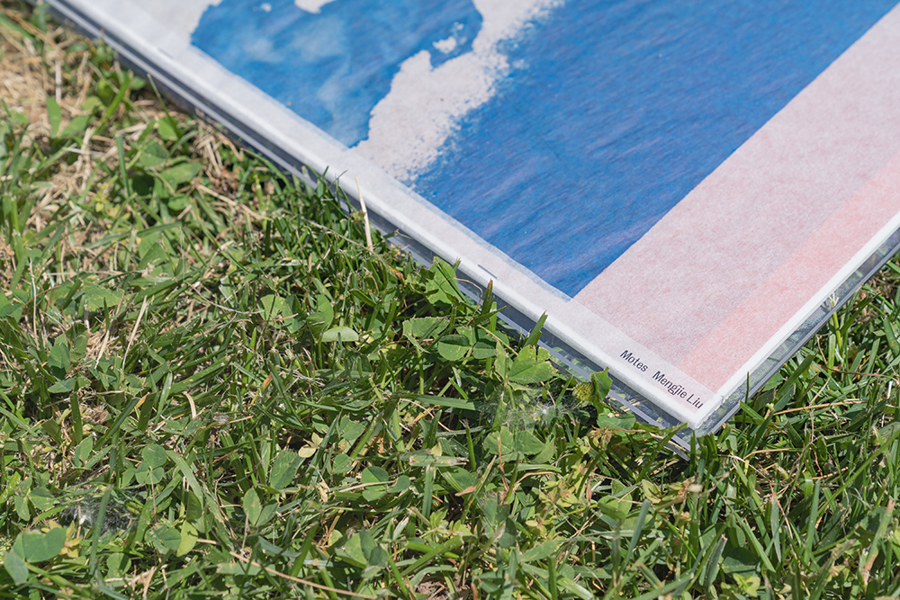
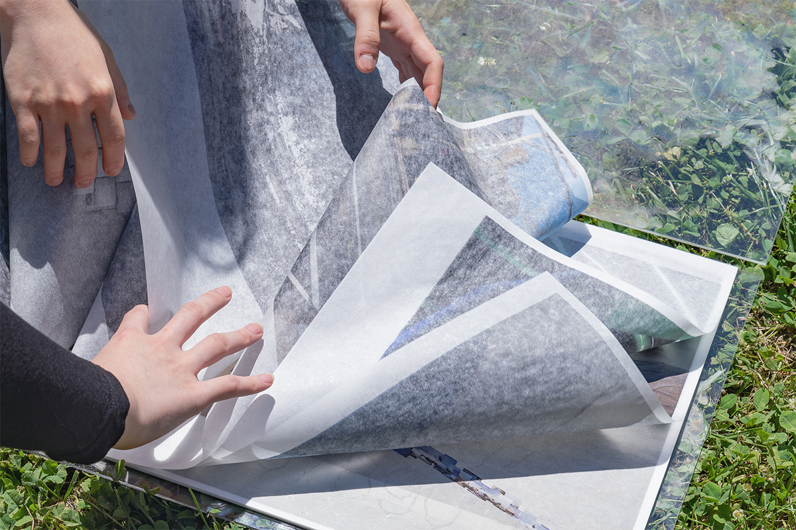
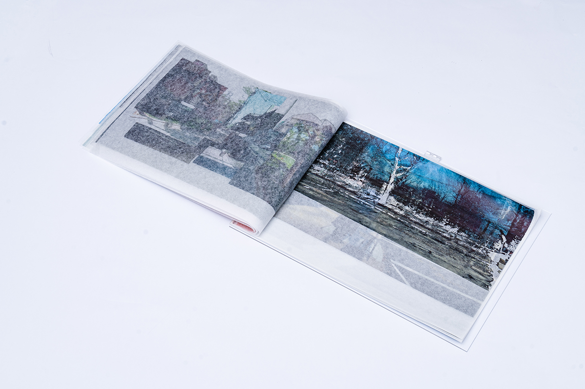
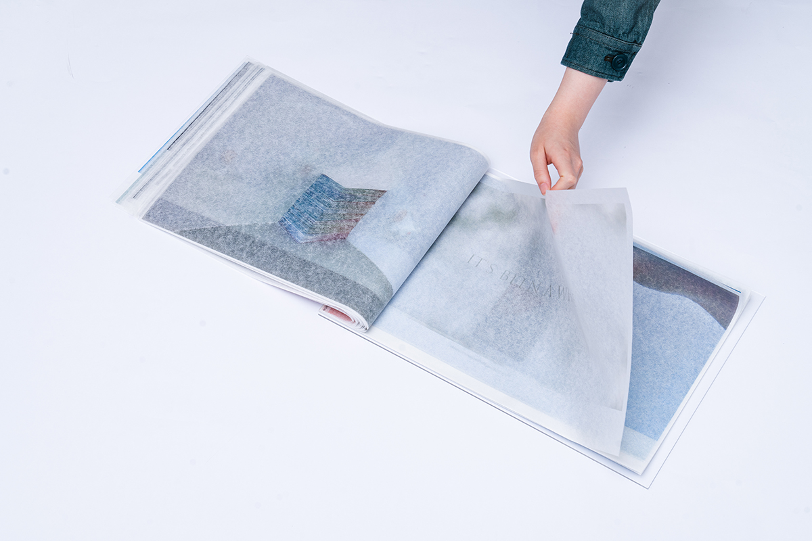
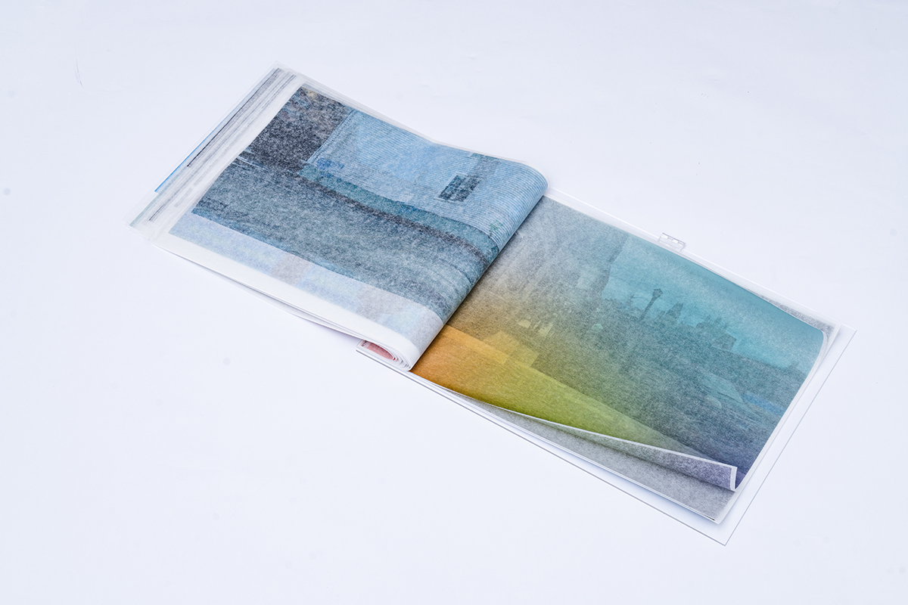
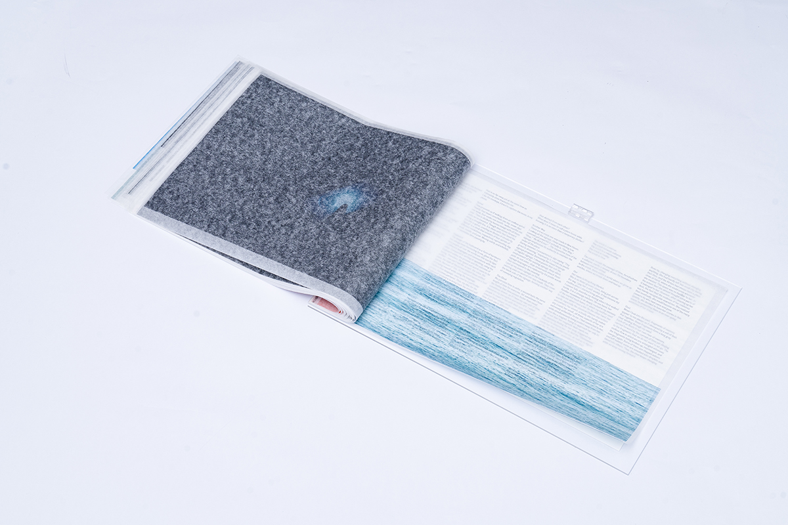
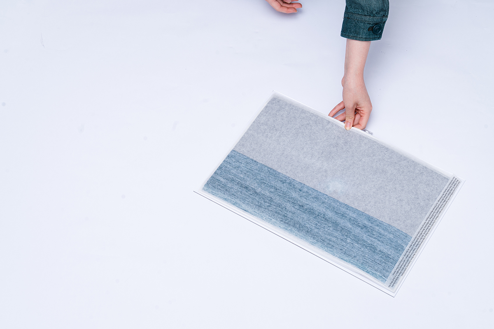

I thought I would use mote as the object to describe my own work. The
tiniest particle of dust, accumulating in the corner, floating in the
air, blown by wind, scattered everywhere.
My thesis book is called motes, a collection of mote.
It was inkjet printed on tracing paper, 13 by 19, pure
image, protected in an acrylic case. Images from each projects were
chopped up and recombined together in a sequence that people described
as a ‘smash cut’ in film, while at the same time creating a connection
between each other visually, or conceptually. A sense of floating in the
stream of consciousness.
I laid out the captions for each
project on a sheet of paper as the key to decode the book, and slipped
it in to the case.
I always thought a big book is tricky to
deal with. It takes up space, one could hardly browse through it, and it
requires care to flip each page. But I chose to make the biggest book
I’d never made for my thesis, for all my selected projects. It needs to
be handled with care. One has to handle it with care, with generosity,
with patience, in order to sense it, to feel it.